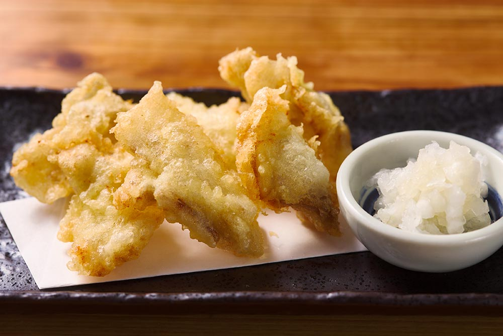
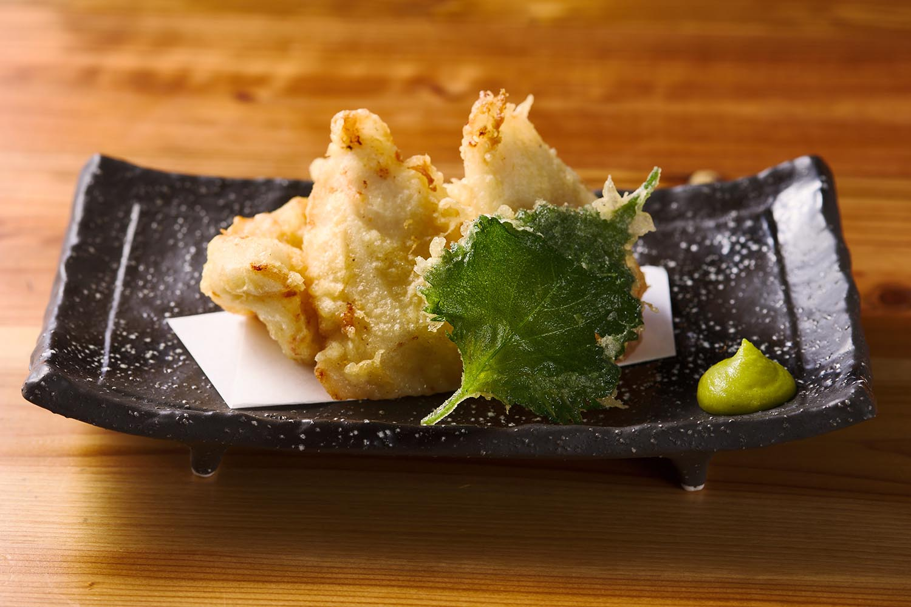
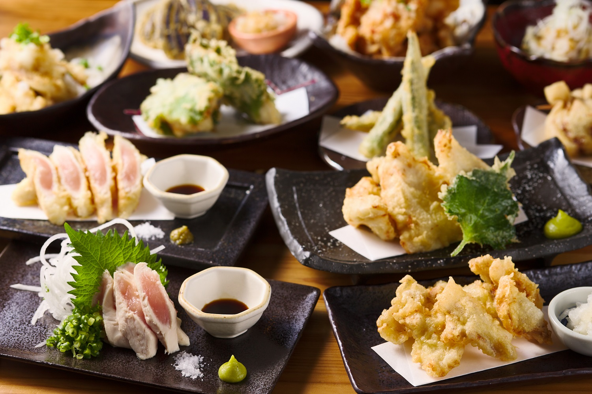

とり天が主役の店
大分から仕入れる鶏むねをおでん出汁に漬けこみ、ヘルシーな天ぷらに仕上げています。お酒にも合うとり天を、ぜひ一度ご賞味ください。
天ぷらは定番から季節の野菜、変わり種まで。かつお出汁の関西おでんと、それに合う日本酒もそろえています。

とり天居酒屋 かしわ 代々木店
代々木駅から徒歩3分
ランチもディナーも、とり天を。

大分から仕入れる鶏むねをおでん出汁に漬けこみ、ヘルシーな天ぷらに仕上げています。お酒にも合うとり天を、ぜひ一度ご賞味ください。
天ぷらは定番から季節の野菜、変わり種まで。かつお出汁の関西おでんと、それに合う日本酒もそろえています。




東京都渋谷区千駄ヶ谷5-19-1 アベリア千駄ヶ谷101